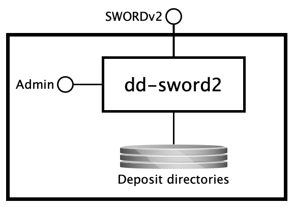

dd-sword2¶
DANS SWORD v2 based deposit service
SYNOPSIS¶
dd-sword2 { server | check }
DESCRIPTION¶
Overview¶
Context¶
The dd-sword2 service is the DANS implementation of the SWORDv2 protocol. It is a rewrite in Java of the Scala-based
project easy-sword2. As its predecessor, it does not implement the full SWORDv2 specifications. Also, since the SWORDv2 specs leave
various important issues up to the implementer, the service adds some features. The best starting point for learning about dd-sword2 is this document. Where
appropriate it contains references to the SWORDv2 specifications document. Client programmers should consult the easy-sword2-dans-examples
project.
Purpose of the service¶
At the highest level dd-sword2 is a service that accepts ZIP packages that comply with the BagIt packaging format and produces a
deposit directory for each.
Interfaces¶
The service has the following interfaces.

SWORDv2¶
- Protocol type: HTTP
- Internal or external: external
- Purpose: depositing packages, submitting them for archival processing and tracking progress
Deposit directories¶
- Protocol type: Shared filesystem
- Internal or external: internal
- Purpose: handing packages to the post-submission processing service and reporting back status changes written by that service to the
deposit.propertiesfiles of the deposit directories.
Admin console¶
- Protocol type: HTTP
- Internal or external: internal
- Purpose: application monitoring and management
Processing¶
Creating and submitting a deposit¶
TODO
Finalizing a deposit¶
TODO
Tracking post-submission processing¶
TODO
ARGUMENTS¶
positional arguments:
{server,check} available commands
named arguments:
-h, --help show this help message and exit
-v, --version show the application version and exit
EXAMPLES¶
Java client code examples are available in easy-sword2-dans-examples.
INSTALLATION¶
Currently this project is built as an RPM package for RHEL7/CentOS7 and later. The RPM will install the binaries to
/opt/dans.knaw.nl/dd-sword2 and the configuration files to /etc/opt/dans.knaw.nl/dd-sword2.
For installation on systems that do no support RPM and/or systemd:
- Build the tarball (see next section).
- Extract it to some location on your system, for example
/opt/dans.knaw.nl/dd-sword2. - Start the service with the following command
/opt/dans.knaw.nl/dd-sword2/bin/dd-sword2 server /opt/dans.knaw.nl/dd-sword2/cfg/config.yml
CONFIGURATION¶
This service can be configured by changing the settings
in config.yml. See the comments in that file for
more information.
BUILDING FROM SOURCE¶
Prerequisites:
- Java 11 or higher
- Maven 3.3.3 or higher
- RPM
Steps:
git clone https://github.com/DANS-KNAW/dd-sword2.git
cd dd-sword2
mvn clean install
If the rpm executable is found at /usr/local/bin/rpm, the build profile that includes the RPM packaging will be activated. If rpm is available, but at a
different path, then activate it by using Maven's -P switch: mvn -Prpm install.
Alternatively, to build the tarball execute:
mvn clean install assembly:single